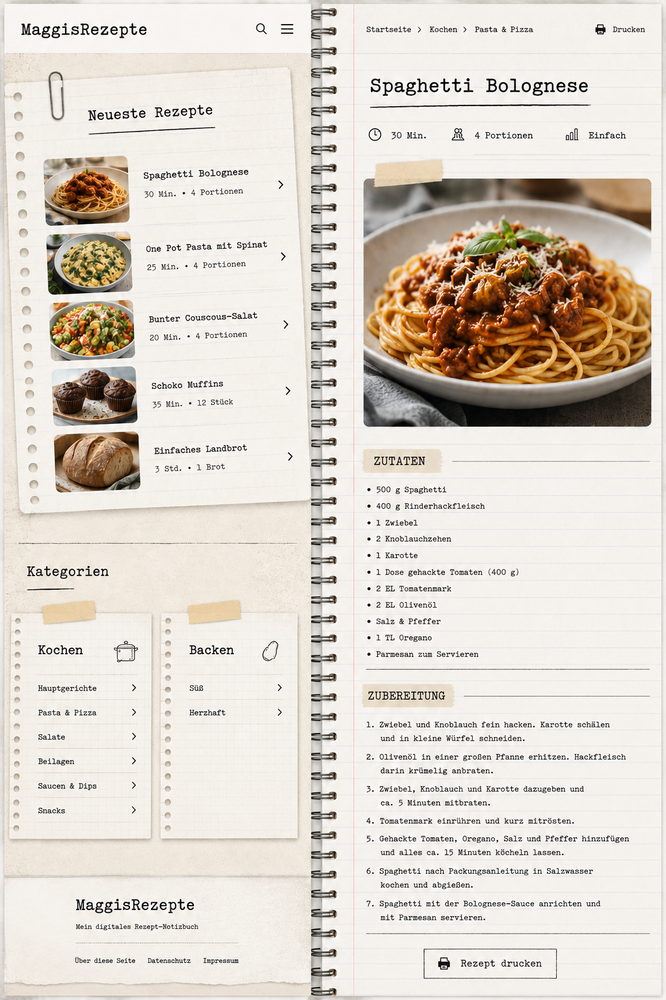

Spaghetti Bolognese

Zutaten
- 500 g Spaghetti
- 400 g Rinderhackfleisch
- 1 Zwiebel
- 2 Knoblauchzehen
- 1 Karotte
- 1 Dose gehackte Tomaten (400 g)
- 2 EL Tomatenmark
- 2 EL Olivenöl
- Salz & Pfeffer
- 1 TL Oregano
- Parmesan zum Servieren
Zubereitung
- Zwiebel und Knoblauch fein hacken. Karotte schälen und klein würfeln.
- Olivenöl erhitzen und Hackfleisch krümelig anbraten.
- Zwiebel, Knoblauch und Karotte dazugeben und etwa 5 Minuten mitbraten.
- Tomatenmark einrühren und kurz mitrösten.
- Tomaten, Oregano, Salz und Pfeffer hinzufügen und etwa 15 Minuten köcheln lassen.
- Spaghetti kochen und abgießen.
- Mit der Bolognese-Sauce und Parmesan servieren.